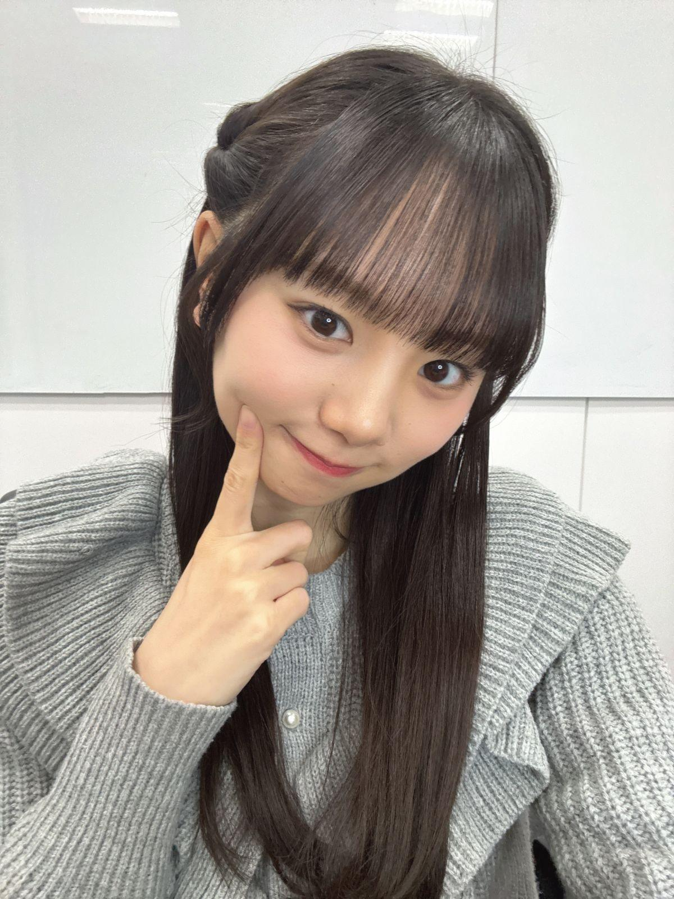
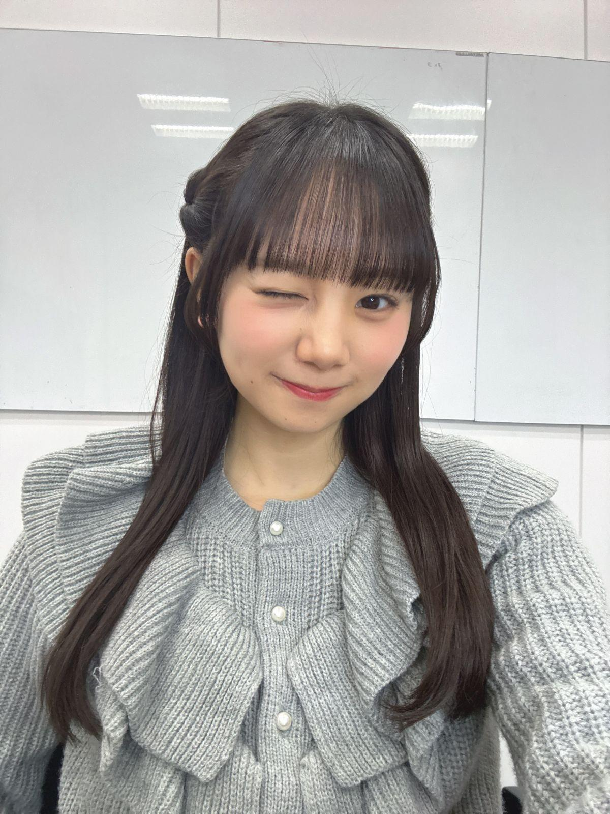
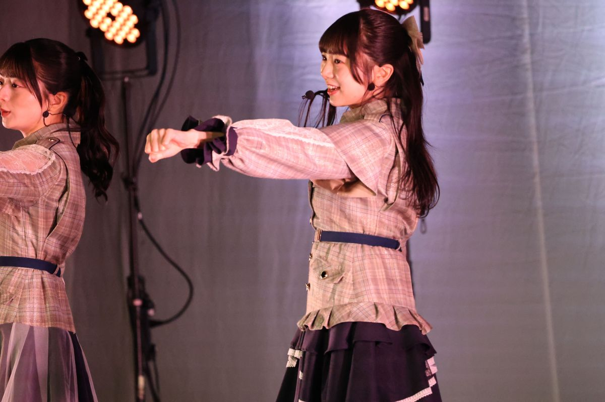
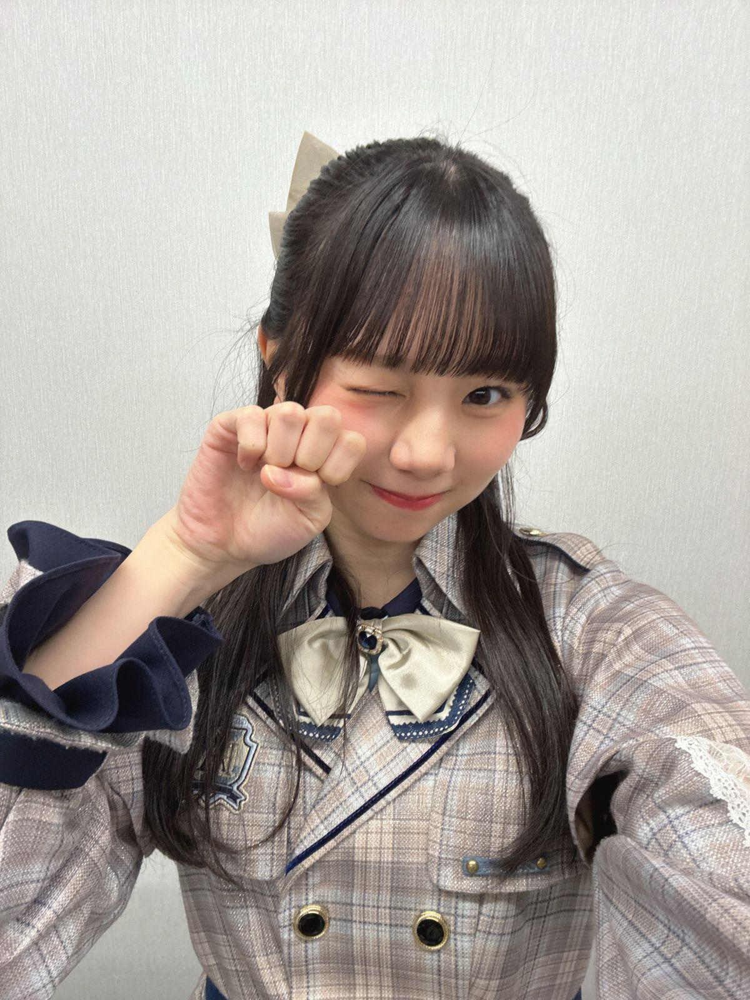
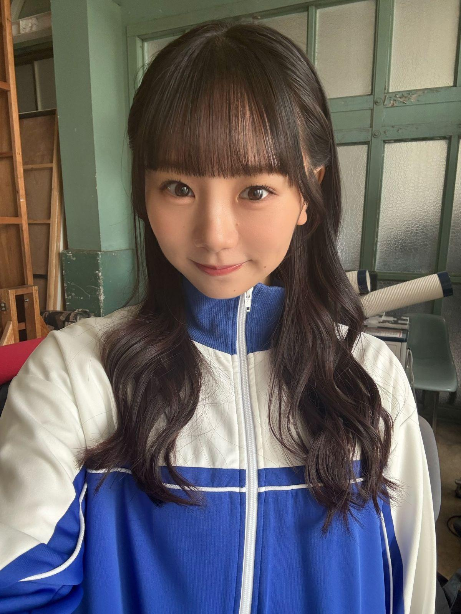
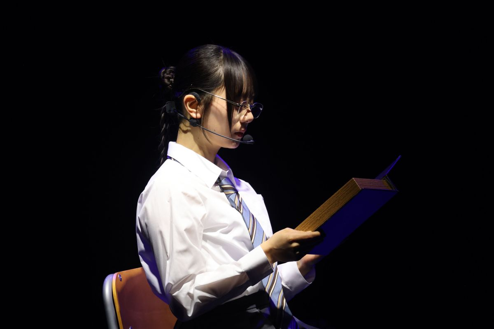
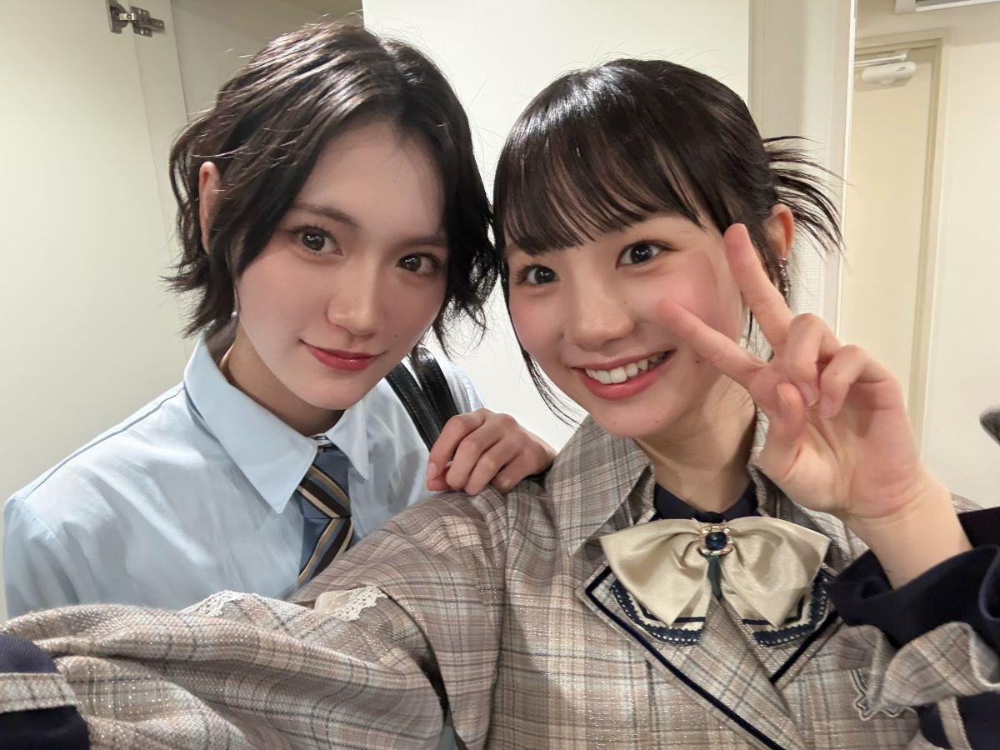
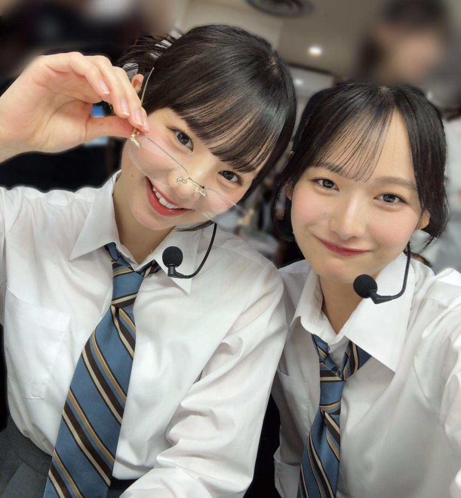
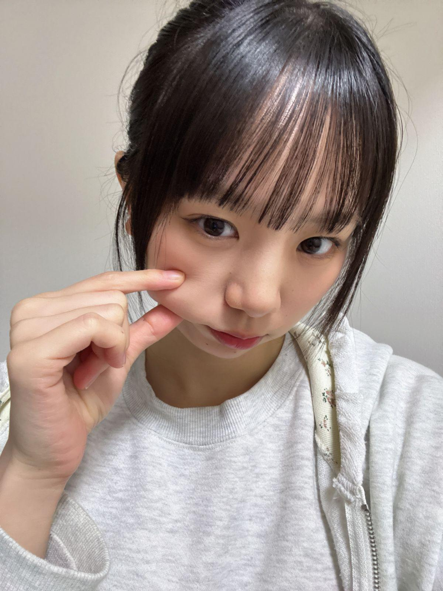

菜那的もぜか日記〜今天蛋糕把肚子吃好飽〜
2026.11.23原文：菜那のもぜか日記〜今日はケーキでお腹いっぱいに〜
閱讀原文
おやっとさぁ
歡迎來到我的部落格～おじゃったもんせ
今天是線上對談會！
謝謝參加的大家。
今天穿了ここな送給我的衣服喔〜
好可愛。

照片 1

照片 2
而且呢而且呢，今天也聊了很多。
喉嚨好像有點累累的（ ; ; ）
雲組公演的感想、
還有門票完售的祝賀之類的
好開心喔ーーーーーー
12/14 的 BOKUAO Winter Concert 2026 〜君への贈りもの〜
有很多人說很期待，
我雖然只能回「我也是ーーー」，
但其實我已經想用全身跳舞來表達「我也是」了。
如果能跟來現場的每一個人都對上眼就好了，我會這樣想著呢。
現在就要開始在腦中預演了！
今天啊，對談會之後發生了各種事，
變成了滿腦子都在想僕青的一天。
這個週末好多活動，真的很謝謝大家
天氣很冷呢，大家要注意不要感冒喔。
公告📢🍰
『雲組公演 B♡BBLE VS 月華』最終決戰
日期時間：2027 年 1 月 30 日(六) 開場 13:45/開演 14:30
場地：NEW PIA HALL
超雲組公演
日期時間：2027 年 1 月 30 日(六) 開場 18:15/開演 19:00
場地：NEW PIA HALL
粉絲俱樂部先行目前正在受理中！
至 11 月 29 日(日) 23:59 止。
請一定要來現場。
會做成超有趣的 live。
https://bokuao.com/news/detail/6227
「今天的爆笑重點」
跟あおいちゃん拍了 TikTok，
好玩到在走廊上笑到快要倒下。
之後會上傳，敬請期待
那就明天見
謝謝你閱讀，ありがとさげもした
菜那的もぜか日記〜釣魚🎣〜
2026.11.22原文：菜那のもぜか日記〜釣り🎣〜
閱讀原文
おやっとさぁ
歡迎來到我的部落格～おじゃったもんせ
今天是僕青免費公演＆握手會！
謝謝來到現場的大家♡
今天在免費公演上
初披露了ここな有出演的電影「つりこまち」的
劇中主題曲「でっかい夢」✨️

照片 1
有釣魚的舞蹈耶！！
編舞老師的願望是，我們在釣魚的時候，希望大家變成小魚被釣上去
變成小魚吧〜🪄✨
也謝謝貼紙機會通道、團體握手會、
個別握手會！
有很多人來跟我說昨天的感想，
還有門票完售，大家都超級替我們高興。
能看到大家開心的表情，我也很開心。
今天時間也一下子就過去了呢ーーー
明天是線上對談會！
請多多指教

照片 2
公告📢👽
11 月隨機生寫真（5 張一套）【ジャージ2026】發售了！！

照片 3
絕對是在文化系社團的人
https://bokuao.com/news/detail/6264
「今天的爆笑重點」
りこ好像想去健身房，
開始找こっちゃん商量該去哪間健身房。
然後周圍的成員就吐槽說她找錯商量的人了。
那就明天見
謝謝你閱讀，ありがとさげもした
菜那的もぜか日記〜課堂參觀🫧〜
2026.11.21原文：菜那のもぜか日記〜授業参観🫧〜
閱讀原文
おやっとさぁ
歡迎來到我的部落格～おじゃったもんせ
今天是『雲組～B♡BBLE～公演』第 3 回戰！
謝謝來到會場看的大家
也謝謝看直播的大家！
今天前半是學校概念！
家長的各位有盡興嗎？？
我是認真角色。
跟とあちゃん借了無框眼鏡。
照片 1
今天的歌單🫧
制服のパラシュート
スペアのない恋
虹を架けよう
好きになりなさい
🗣️
カイロに月
暗闇の哲学者
恋は倍速
君と見た空は
🗣️
風船は秒速3メートルで上昇する
初めて好きになった人
太陽よ、君のために輝け
僕は味方だ
這次初披露的是「暗闇の哲学者」、「僕は味方だ」！
「暗闇の哲学者」我是站在主成員的位置上表演的。
手部的波浪很難，每天在家練習了，但還需要再練呢。
在進入哲學家之前，有加入朗讀一部分歌詞的演出，這是我自己想出來的。
在想自己能在 live 上發揮的強項是什麼的時候，覺得大概是「聲音」，再加上這可以作為從カイロ一下子把人拉進暗闇の哲学者世界觀的一種手法，所以就提出來了！
覺得怎麼樣呢？？

照片 2
「僕は味方だ」跳這首歌超好玩。
我是站在りあん的位置！
2A 後半的舞蹈我超喜歡，
是我的心愛片段。
月華的公演也看了👀
中途訊號變差，重新進去過，
但其實我從頭就在看喔〜
即使是同樣的歌單，看起來會完全不一樣嗎？
大家怎麼想？

照片 3
一見面就直接被擊中了。我好喜歡這個造型。
雲組公演的話就先到這裡…
要跟大家報告一件開心的事。
這次，12 月 14 日（一）舉辦的
「BOKUAO Winter Concert 2026 〜君への贈りもの〜」門票完售了。
太好了ーーーーーーー
好開心好開心。
完售之後我想到的是，以後也能這樣常常跟大家報告開心的消息就好了。
希望推僕青的時候，能有好多「好好玩ーーー！」的瞬間。
公演當天，首先想把感謝的心意送給大家。
還有愛的心意。
我好喜歡大家！
就算天氣這麼冷，也會熱到發燙那樣
把心意砸過去
當天一起好好享受吧。
公告📢🎫
『雲組公演 B♡BBLE VS 月華』最終決戰
日期時間：2027 年 1 月 30 日(六) 開場 13:45/開演 14:30
場地：NEW PIA HALL
超雲組公演
日期時間：2027 年 1 月 30 日(六) 開場 18:15/開演 19:00
場地：NEW PIA HALL
粉絲俱樂部先行受理已從今天 21:00 開始！
最終決戰可以在同一場 live 裡看到 B♡BBLE 和月華各自的表演。
超雲組公演則是月華➕B♡BBLE 的 12 人編制來演出。再加上最終決戰的結果發表也會在這場 live 裡進行。
心跳加速。請一定要看到最後喔
https://bokuao.com/news/detail/6227
「今天的爆笑重點」
今天公演中有一段ゆうほ超可愛的，害我笑了
昨天練習的時候，我有跟ゆうほ說這段舞蹈要這樣跳。
因為是在旁邊跳所以注意到才跟她說的，
今天正式演出時呢，在那一段之前我們對上眼了。
我本來就喜歡在歌中跟成員對到眼，所以只是那樣看了一下，
結果ゆうほ就🙂↕️做出「交給我吧」那種眼神交流，害我笑了
然後她真的有好好跳到那個動作
我就想「這孩子好可愛ーーーー」然後笑出來了。

照片 4
那就明天見
謝謝你閱讀，ありがとさげもした
菜那的もぜか日記〜刨冰取消〜
2026.11.20原文：菜那のもぜか日記〜かき氷中止〜
閱讀原文
おやっとさぁ
歡迎來到我的部落格～おじゃったもんせ
今天是技術彩排喔ー
好好玩喔ーーーーー
第三回合的彩排好好玩笑
感覺成員之間互相笑鬧的時間比平常還多。
啊ーーー明天就是了喔ーー
好期待！！
因為太冷了，本來想說課程結束後要去吃的刨冰就取消了。
今天會早點睡喔。
也會泡個澡喔🛀
最近超喜歡泡澡的，
早上也會泡完澡才出門呢。
明天也會早上先泡再去喔ーーー
還有，鬧鐘響之前就能醒了。
而且有時候還早了 20 分鐘。
很厲害吧！？
我其實很愛睡懶覺的耶。
所以，不會再從那邊二度回籠覺，
而是慢慢吃早餐之類的。
是不是又更像大人了一點啊ーー

照片 1
高級軟綿綿的擠壓玩具喔
公告📢🎮
今天，25 時 09 分起播出
日本電視台系「バズリズム02」
青空組會出演！！
是「僕は味方だ」的電視初表演！
不只表演，也有參加談話環節
請大家一定要即時收看！
明天是雲組公演！
B♡BBLE 的公演從 14:30 開始。
希望你們能看哪怕一下子ーーー🥹
因為一定會想接著看下去的ーーーーー！
明天大家也有各自的任務喔。
「今天的爆笑重點」
為了研究 live，看了各種現場影像
看到有趣的演出笑到不行。
好想做一場讓大家忘我、超好玩的 live 啊
那就明天見
謝謝你閱讀，ありがとさげもした